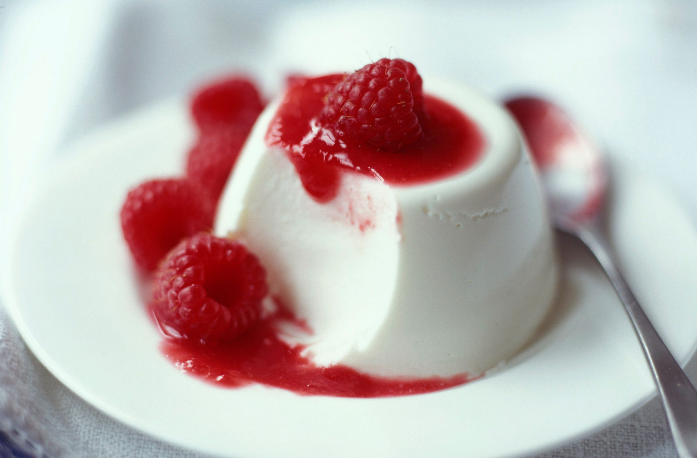

The Panna Cotta Recipe

Description
The Panna Cotta is a recipe for your meals as dessert that is rich in vitamines and helps keep your body in its best.
This recipe is from Northern France, at mild age when Queen Elisabeth asked his servers to surpass themselves by
impressing her with something delicious she could eat, tasting like cakes, but as good as candy.
Ingredients
- 3 leaves gelatine
- 250 ml hole milk
- 250 ml double cream
- 1 vanila pod
- 50g of caster sugar
- 300g of fresh raspberries
- Icing sugar
- Mint leaves (optional)
Steps
- Add the sheets of gelatine to a bowl of cold water and soak for 5 mins.
- Pour the milk and cream into a saucepan with the sugar and vanilla seeds (to scrape the seeds out of the pod, use the back of a knife). Stir to combine and bring to a simmer, then remove from the heat. Take the gelatine out of the cold water and squeeze out the excess, then add to the milk mixture. Stir until completely dissolved. Tip into four ramekins and place in the fridge to set for at least a couple of hours.
- To serve, turn each ramekin upside-down onto a serving plate. If the panna cotta won't drop out, carefully dip the ramekin in a bowl of warm water to loosen it. Serve with a drizzle of strawberry compote and sliced fresh strawberries.